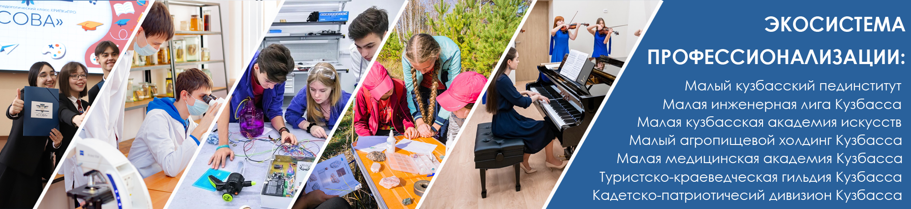

Добро пожаловать на платформу «Управленческий навигатор Кузбасса»!
Платформа создана в рамках проекта «Региональная модель опережающей подготовки и непрерывного развития управленческих кадров системы образования в условиях демографических и социокультурных вызовов (на примере Кемеровской области — Кузбасса)». Она объединяет руководителей и заместителей образовательных организаций, участников кадрового резерва — для развития системы образования Кузбасса и реализации государственной политики.

Как работает региональная модель
Маршрут руководителя: от первичной диагностики к повторной, с индивидуальной программой развития между ними


Создать условия для осознанного профессионального роста руководителей, формирования сильного кадрового резерва и совместного поиска инновационных решений, направленных на повышение качества, эффективности и конкурентоспособности образования Кузбасса.
Благодаря участию в проекте вы сможете
Для руководителей и заместителей образовательных организаций, кандидатов в кадровый резерв
Прокачать качества
Развить профессиональные и лидерские навыки на практических управленческих задачах
Персональные рекомендации
Маршрут развития строится по результатам вашей диагностики, без общих шаблонов
Поделиться опытом
Передать удачные решения коллегам через банк практик и площадки региона
Экспертная поддержка
Консультации опытных управленцев и экспертов института по сложным ситуациям
Сообщество
Вместе определять повестку развития образования Кузбасса на мероприятиях проекта
Контакты
Если у вас есть вопросы о проекте — свяжитесь с нашей командой
Команда проекта
Адрес: г. Кемерово, ул. Заузелкова, 3
Телефон: 8 (3842) 56-69-86
Почта: ouk@kuz-edu.ru
Группа ВКонтакте · Telegram · Канал Max
Техническая поддержка: ouk@kuz-edu.ru · Приёмная института: +7 (3842) 31-15-86, ipk@kuz-edu.ru
г. Кемерово, ул. Заузелкова, 3 · 8 (3842) 56-69-86
Если карта не открылась в вашем браузере — найдите точку по ссылке.